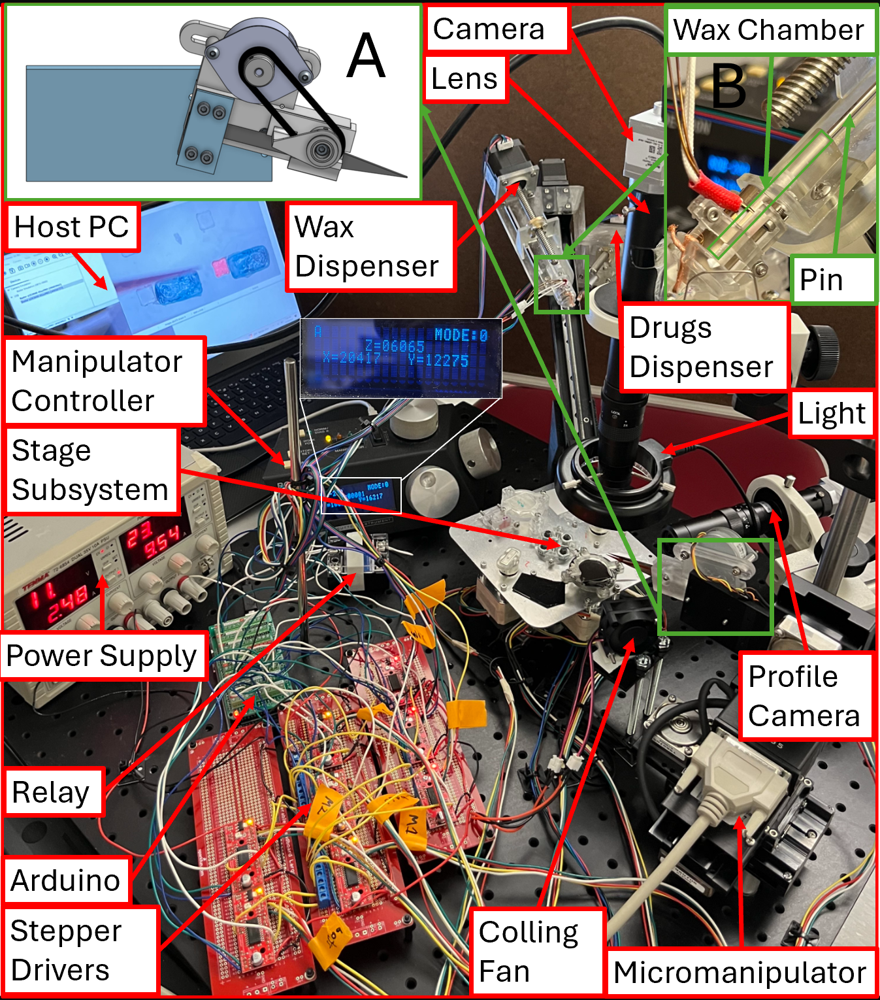
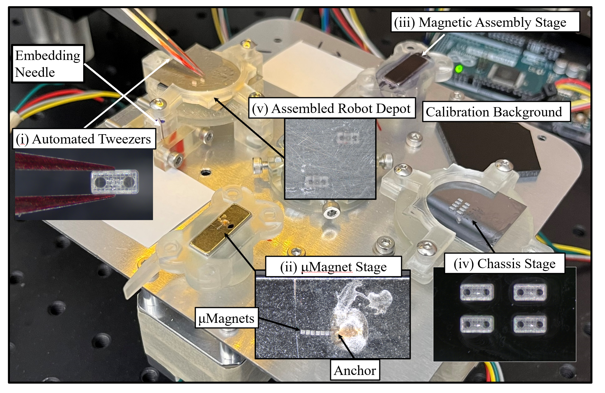
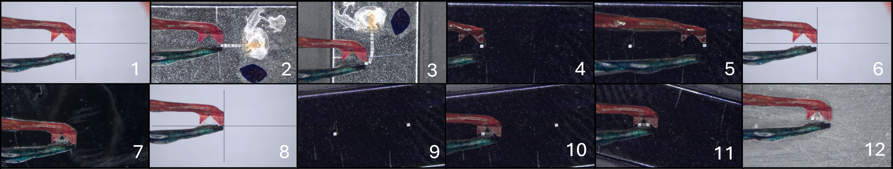
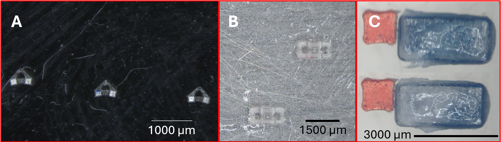
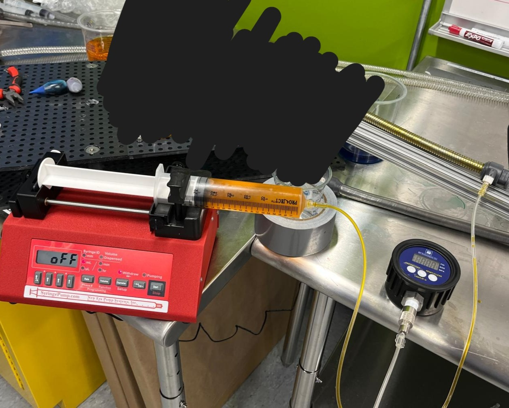
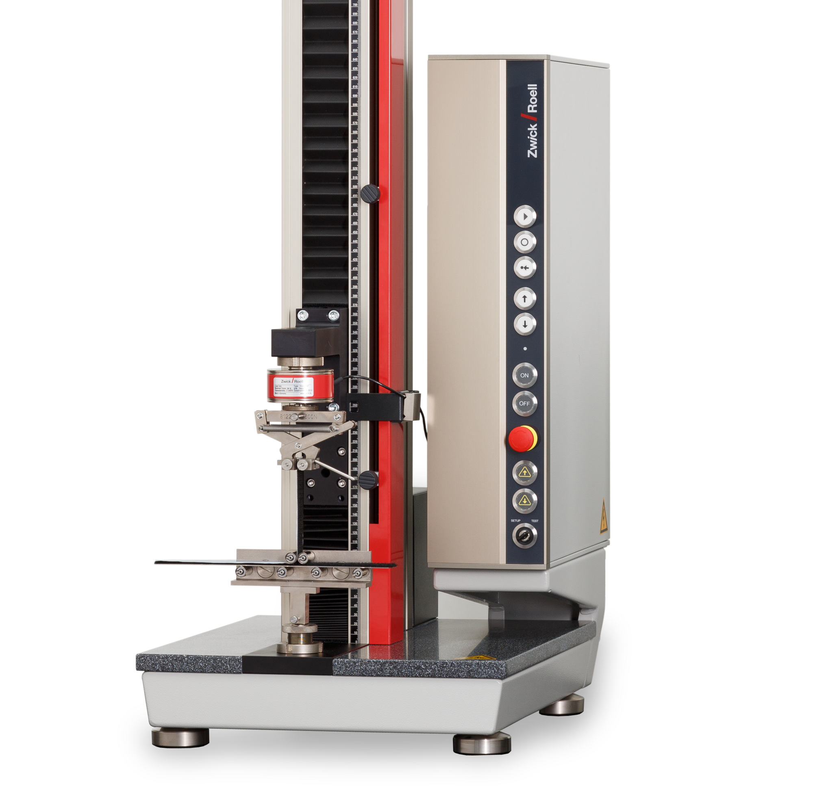
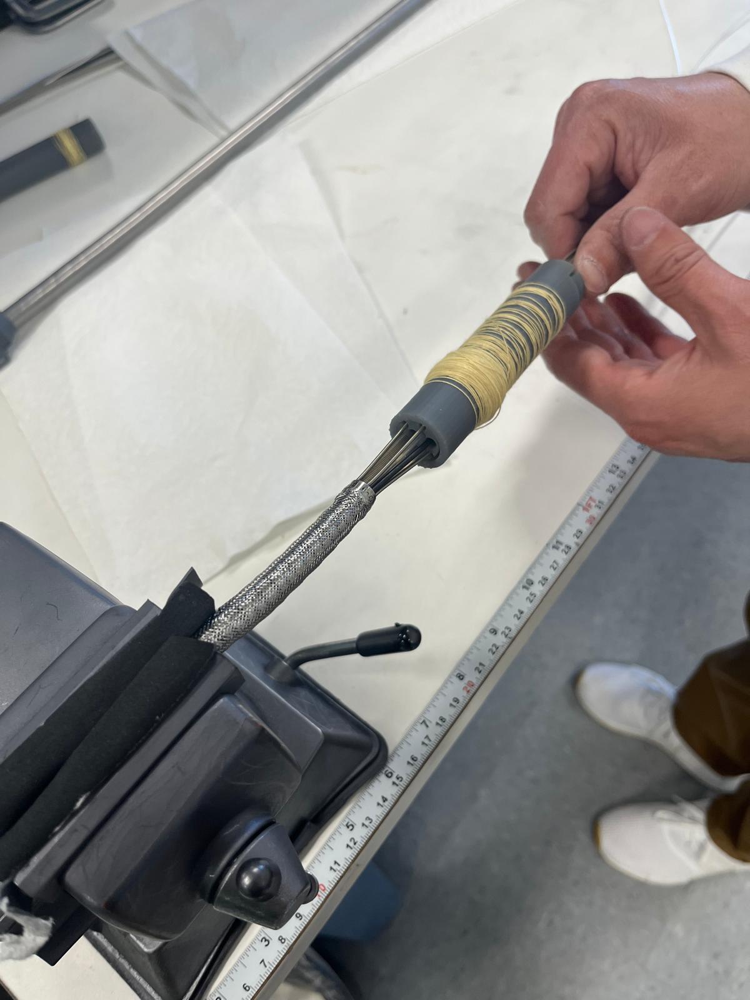
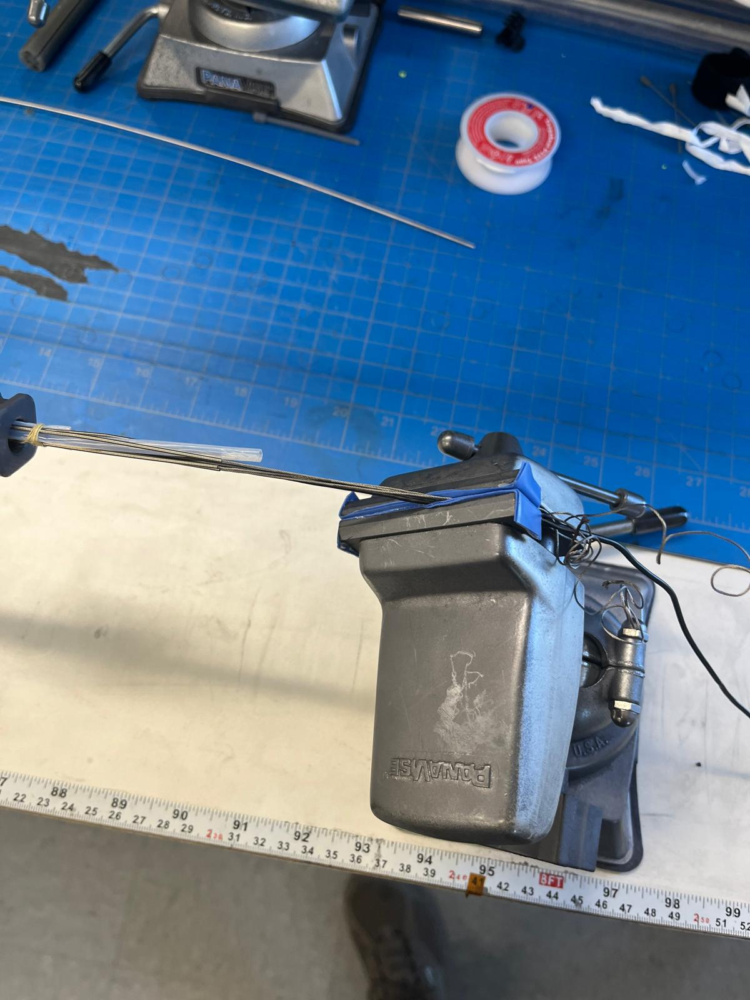
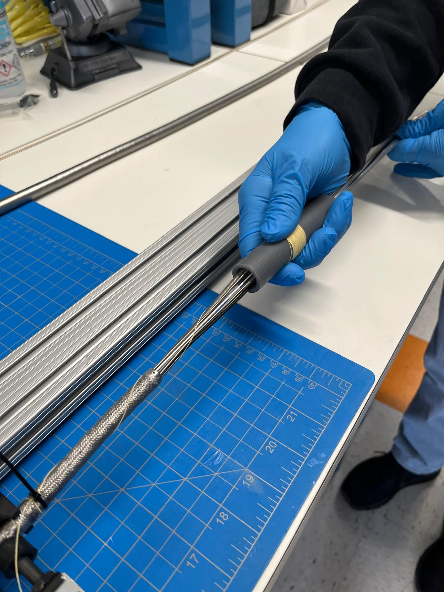

Master’s Research
Automated Microrobot Assembly System


This system is the main project for my Master's thesis. Currently, it has the capability to embed cubic micro-magnets with dimensions as small as 100 microns per side into micro-robot chassis. It can embed multiple micro-magnets with several different orientations into the same robot. It can also seal liquid drug payloads inside of these microrobots by injecting the payloads with a needle and sealing them with a layer of wax. All of this it does fully autonomously.


The results of my work were significant increases in the reliability of these assembly processes. I cut down the time for micro-magnet embedding by about 55%, and the time for drug loading and sealing by 67%. Not only was the required time reduced, but the need for human labor was entirely removed. The results also offered greater consistency than what could be achieved by human labor.

Triton Robotics
Endoscope Friction Testing & Sealing Constraints
This project began as a simple task to characterize how friction changed due to wear over the lifecycle of a hydrophillic coating on an endoscope. As the tests progressed, it became apparent that there were severe issues with not only the hydrophillic coating, but other parts of the system as well.
Two nested tubes needed to slide smoothly along each other for the system to work, the inner one having a hydrophillic coating on its exterior surface. Maintaing the efficiency of the coating required frequent injection of water into the system to serve as lubricant. A dynamic seal existed at one end of the tubes, to regulate the flow of lubricant, but this seal was found to frequently damage the hydrophillic coating of the tube it was in contact with. To better understand the problem I conducted tests on the effictiveness of the seal and the behavior of the lubricant. I found that neither behaved at all as they had thought to be understood by our team. I conducted several tests to closely examine the behavior of the lubrication, and the causes of damage to the hydrophillic coatings. Using this knowledge, I specified an injection pressure that was required for water to distribute throughout the entire system, and designed a new dynamic seal to be able to hold this pressure. Doing so, I was able to significantly increase the usable life of the hydrophillic coatings and reduce friction in the system to below 5N, which resulted in greater safety margins for clinical trials.
The following images show the machine I used to conduct the friction tests (Zwick), and one of the setups I used for lubrication testing. Portions of the setup are obscured for intellectual property reasons.


Endoscope Channel Insertion Process

Triton had frequent issues with internal components of endoscopes being damaged during assembly. This occured due to the need to insert 10 flexible channels into the length of an endoscpe, each one being about 2m long and very fragile. The channels would frequently get damaged or tangled, making the endoscope unusable.
To solve this problem, I devloped a method to bind the channels together during insertion, and then safely release the binding after the insertion process was completed. I used a Kevlar string for the binding, which was strong enough to hold the 10 channels together and slippery enough to be pulled out of the endoscope afterwards.





Endoscope Tip Failure Analysis & Destructive Testing

I investigated recurring failures of the endoscope tip separating from the core by conducting destructive testing to identify the failure mode and quantify the margin against expected loads. I collaborated with another engineer to estimate the forces the tip assembly needed to withstand, then contributed to a redesign that substantially increased strength without increasing the footprint or compromising the flexibility envelope. This work improved reliability and reduced the risk of in-field mechanical failures.
Spectral AI
IPX2 Water Ingress Validation & Design Improvements

I led internal IPX2 water ingress validation testing for a medical device submitted for FDA review. Working with another intern, I built a low-cost ingress test setup to reproduce standardized conditions and used the results to identify leak paths and failure points. The testing directly drove two design alterations that prevented water leakage through gaskets and improved overall sealing robustness under realistic exposure conditions.
Repeated-Cycle & Extended-Life Validation Using a 6-DOF Robot

I developed bio-realistic extended-life validation tests using a 6-DOF robot and hospital-grade cleaning supplies to simulate real use and cleaning cycles. I programmed the robot to perform repeatable cyclic interactions to characterize button/logo lifecycles and designed additional tests to evaluate long-term stress effects on key mechanical features. This created a reliable, repeatable validation workflow and produced documentation suitable for audit and design-review justification.
University Projects
Mechatronics Project

In a mechatronics-focused project, I integrated sensors, actuators, and embedded control software to build a functional system that interacted with the physical world in real time. The work emphasized reliable I/O, hardware-software integration, and practical debugging under real constraints. I implemented the control logic, validated behavior through testing, and refined the system to improve repeatability and performance.
Senior Design Project

For my senior design project, I contributed to the design and build of a sensing and control system for a photobioreactor, including the mechanical/electronics enclosure and hardware integration. We selected a color-sensing approach to measure algae concentration, designed the electronics to control relays and acquire sensor data over I2C/SPI, and implemented interfaces to record readings and interpret user commands. The result reduced manual effort and enabled more consistent measurement and control.